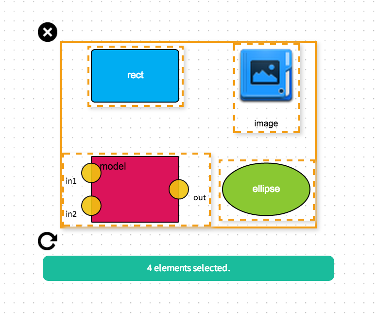
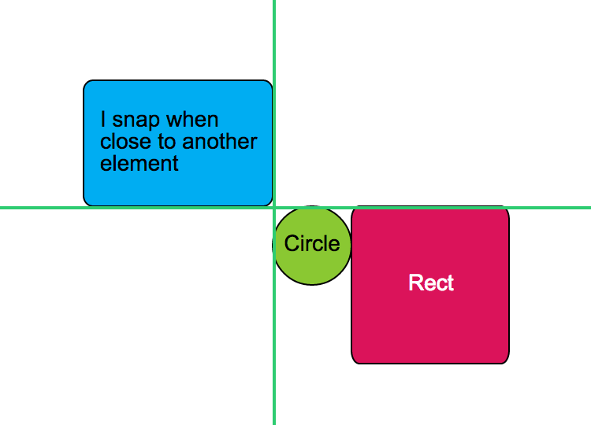
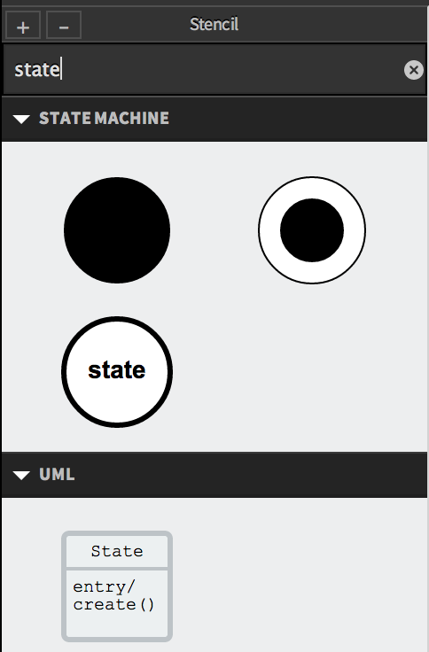

Rappid v1.4 Lisbon
Released Sep 16th, 2014
Rappid, the new generation JavaScript diagramming UI framework, got better once again. Leveraging the best of SVG and HTML 5, Rappid is becoming the choice number one for applications that involve a diagramming component. Complicated systems increasingly require visual tooling for process, workflow and data management accessible to non-programmers. Rappid fills this need.
Rappid v1.4 Lisbon
brings new components for data visualization,
group manipulation with diagram elements, snaplines for helping users
in aligning elements, full-text search in the element palette and many other
improvements to the existing components and widgets.
Thanks go to our customers and clients for their extremelly valuable feedback that constantly makes the framework better and to the JointJS community and contributors for their input, support and contributions. Thank you!
New features
Tools for manipulating group of elements
Now it is possible to add tools for group manipulation of elements to the selection the same way as you can do in
ui.Halo control panel.

Adding new tools for manipulating group of elements in one go is now as easy as
adding an icon and binding functions that implement your custom actions.
By default, selections have a group remove tool and a rotation tool.
Moreover, a box below the selection can be filled with an arbitrary HTML
in order to show important information about the elements in the selection.
Snaplines
Snaplines are great for helping the user in aligning elements in the diagram by showing alignment lines and snapping elements
if they are horizontaly or vertically close to other elements. Snaplines can be turned
on by a single line of code.

Pie, Donut charts and Knobs
Rappid is getting stronger in data visualization too. Next to the existing
Line, Area and Bar charts, we're now bringing
to you also Pie, Donut charts and Knobs.


Both Pie and Donut charts can have multiple data series, can be animated and heavily customized.
Knobs are a great way to nicely display numerical values. Note that from the JointJS/Rappid perspective, a chart
is just another shape. This means that it can be added into your diagrams, manipulated
and edited with all the built-in control panels and widgets; transformed
(rotated, translated, resized, ...) and animated with standard JointJS functions.
Full-text search in Stencil
Stencil, the drag & drop accordion-like element palette, is now extended
with full-text search. This is handy if you have a lot of elements in the palette
and you want to offer the user a quick way to filter them.

It's entirely on you what data properties of elements are used for full-text filtering.
... and much more!
The built-in Geometry library library was extended by
another bunch of useful functions such as point.bearing(),
point.reflection(), line.bearing(),
line.pointAt(), rect.containsRect(),
rect.normalize() and rect.bbox().
A new plugin, dia.GraphUtils, has been added that extends
graphs with additional function, constructTree(), for building tree structures from JSON objects.
Inspector, the widget for editing properties
of diagram elements, has been improved by Expressions,
giving you a high flexibility in defining rules for conditionally showing/hiding inputs
based on the values of other inputs.
And there is even more... see the Rappid v1.4 Lisbon
CHANGELOG page for details.
Go grab it and build advanced visual tools in days, not months!
Try Rappid in action in one of our online demo applications, Rappid demo and BPMN Editor. Read more about Rappid on the About Rappid page. Or visit the online documentation.
Thanks and Enjoy!
P.S. Why Lisbon
? Because Rappid v1.4 was released in Lisbon!